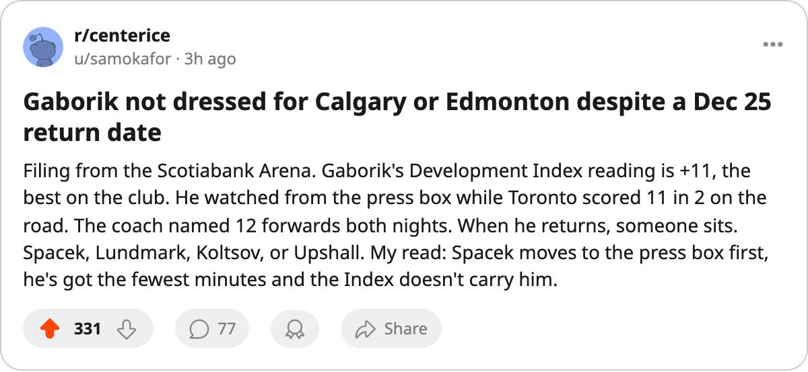

Gaborik still undressed 4 days past his expected return, and Vancouver arrives in 2
The coach has 12 forwards in the lineup, the 99 is not one of them, and the Development Index has him at +11.
 Sam OkaforLeafs beat reporter · Queen City Telegram
Sam OkaforLeafs beat reporter · Queen City Telegram
 Marian Gaborik99 did not play on December 27 or December 28, the two games that followed the return date of 2005-12-25 given at the last edition. He has not been named to the dressed list since. Toronto plays at Vancouver on December 31.
Marian Gaborik99 did not play on December 27 or December 28, the two games that followed the return date of 2005-12-25 given at the last edition. He has not been named to the dressed list since. Toronto plays at Vancouver on December 31.
Gaborik has 17 games played, 6 goals, 2 assists, 8 points, and 22.6 minutes a night. His overall grade on the League Scouting Bureau's current read sits at 99, the highest on the roster, driven by a +11 form reading on the Development Index. That figure is the highest on the team and the second-highest in the league behind  Florida Panthers's
Florida Panthers's  Vaclav Nedorost83 at +12. A man graded at 99 is watching from the press box while
Vaclav Nedorost83 at +12. A man graded at 99 is watching from the press box while  Toronto Maple Leafs wins 5-3 in Calgary and 6-1 in Edmonton.
Toronto Maple Leafs wins 5-3 in Calgary and 6-1 in Edmonton.
The coach has 12 forwards dressed:  Mats Sundin92, Petr Chlup87,
Mats Sundin92, Petr Chlup87,  Brad Richards87, Vaclav Spacek81,
Brad Richards87, Vaclav Spacek81,  Stanislav Chistov87,
Stanislav Chistov87,  Rick Nash85,
Rick Nash85,  Jamie Lundmark83, Konstantin Koltsov73,
Jamie Lundmark83, Konstantin Koltsov73,  Alexander Mogilny89,
Alexander Mogilny89,  Maxim Afinogenov86,
Maxim Afinogenov86,  Nikita Alexeev80, and Scottie Upshall78. Gaborik would make 13. The coach drops one.
Nikita Alexeev80, and Scottie Upshall78. Gaborik would make 13. The coach drops one.
The candidates to sit are Spacek, Lundmark, Koltsov, and Upshall. Spacek plays 5.4 minutes on the fourth line. Lundmark plays 7.7 on the third. Koltsov plays 4.8, the fewest of any forward in the lineup. Upshall plays 5.8. All four are young enough to accept a healthy scratch without a public complaint, and all four would cost the lineup a body on the penalty kill. Chistov handles the first penalty-kill unit at 20.5 minutes a night; nobody on that fourth forward group kills penalties.
Gaborik sits at +11 on the Index, the best on the roster. Chistov is at +8.  Rostislav Klesla87 is at +8. Lundmark is at +8. Nash is at +7. Five players on the roster are pulling the Index at +7 or above, a cluster no other club in the league has matched. When Gaborik enters the lineup, that cluster becomes six and the coach has to hide one more body on the fourth line or the press box.
Rostislav Klesla87 is at +8. Lundmark is at +8. Nash is at +7. Five players on the roster are pulling the Index at +7 or above, a cluster no other club in the league has matched. When Gaborik enters the lineup, that cluster becomes six and the coach has to hide one more body on the fourth line or the press box.
The  Vancouver Canucks game on December 31 is the first meeting between these clubs this season. Vancouver is 40 points in 36 games, 13-14-4, on a 3-game winning streak. The Canucks are a middle-of-the-road club that will not punish a 13th-forward experiment the way a 50-point club would. The window for a first game back, if it comes, is this one. After Thursday, New Jersey arrives twice.
Vancouver Canucks game on December 31 is the first meeting between these clubs this season. Vancouver is 40 points in 36 games, 13-14-4, on a 3-game winning streak. The Canucks are a middle-of-the-road club that will not punish a 13th-forward experiment the way a 50-point club would. The window for a first game back, if it comes, is this one. After Thursday, New Jersey arrives twice.
